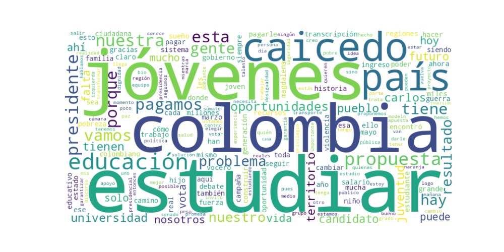

Seguidores: 63,691
El candidato emplea un estilo de comunicación predominantemente informal y cercano, dirigido a establecer una conexión emocional directa con el ciudadano común. Utiliza un lenguaje popular y accesible, evitando tecnicismos, con frecuentes apelaciones al "pueblo", la "gente" y los "jóvenes". Su tono es de confianza y testimonio personal, reforzando constantemente su origen humilde y su trayectoria como "hijo de la educación pública". La comunicación es territorial y regionalista, con referencias constantes a localidades específicas (El Banco, Ciénaga, Santa Marta, Soacha, Cúcuta, etc.), lo que busca proyectar una imagen de gobernante que "camina el territorio" y "conoce la realidad de la calle".
Educación como eje transformador: Es el tema central y hegemónico de su discurso. Lo aborda como la solución estructural a la pobreza, la violencia y la desigualdad. Su propuesta emblemática es #TePagamosPorEstudiar, que consiste en otorgar un salario educativo (medio salario en décimo y undécimo grado, un salario mínimo en la universidad) para garantizar permanencia en el sistema.
Regionalismo y lucha contra el centralismo: Plantea una crítica frontal al centralismo bogotano, al que acusa de empobrecer y abandonar a las regiones. Propone un modelo de mayor autonomía territorial, federalista, donde el poder y las decisiones "vuelvan a las regiones".
Resultados vs. Promesas / Experiencia vs. Improvisación: Construye su credibilidad en el contraste entre una "izquierda con resultados" (su gestión en el Magdalena) y "los mismos de siempre" que solo ofrecen "discursos vacíos" y "política de promesas". Se presenta como el candidato con experiencia de gobierno verificable.
Seguridad y violencia: Vincula la inseguridad directamente a la falta de oportunidades educativas y estatales. Su enfoque es preventivo: sacar a los jóvenes de la guerra y el crimen pagándoles por estudiar, en lugar de enfoques puramente represivos.
El tono general es crítico y confrontacional hacia el establishment político ("los mismos de siempre", "las cúpulas"), el centralismo y, en menor medida, hacia otros candidatos a quienes acusa de falta de experiencia o de ser "aprendices". Simultáneamente, es propositivo y esperanzador, centrando sus soluciones en una narrativa de oportunidad y futuro para la juventud. Hay un fuerte componente emotivo y testimonial, apelando a la indignación por el abandono y a la esperanza de un "cambio real".
La estrategia de comunicación del candidato Carlos Caicedo está diseñada para posicionarlo como la voz auténtica de las regiones olvidadas y de la juventud sin oportunidades, encarnando una "izquierda práctica y con resultados" versus una "izquierda discursiva" o una "derecha tradicional". Su discurso polariza intencionalmente entre "los de los resultados" y "los de los discursos vacíos", entre "el centro" y "las regiones". Parece dirigirse principalmente a un electorado joven, de clases populares y de zonas periféricas y regionales, que se siente excluido del sistema político y económico. Busca evocar identificación (a través de su historia personal humilde), indignación (contra el abandono histórico) y, sobre todo, esperanza concreta (a través de la propuesta tangible del salario educativo), presentándose no solo como un crítico, sino como un gobernante probado que puede replicar sus "resultados" del Magdalena a toda Colombia.
1. Resumen del Patrón de Éxito: El patrón de éxito se basa en una narrativa de ruptura, que contrasta un "modelo viejo y fracasado" (guerra, centralismo, deserción) con una "solución nueva y radical" (pago por estudiar, autonomía regional). La fórmula combina una apelación emocional fuerte a la esperanza e indignación con una propuesta concreta y repetitiva (#TePagamosPorEstudiar), presentada como la única solución estructural a los problemas más sentidos (violencia, pobreza, falta de oportunidades). El éxito reside en simplificar problemas complejos en una dicotomía clara (ellos vs. nosotros) y ofrecer una respuesta tangible.
2. Tácticas de Comunicación Clave: * Contraste Binario y Definición del Enemigo: Construye su mensaje sobre una oposición clara. Define un "ellos" (el establishment político que propone "más cárceles, más bombas, el mismo modelo por 85 años") frente a un "nosotros" (la propuesta "absolutamente distinta"). Esto genera un relato de lucha y cambio. * Emocionalización de Datos y Problemas Estructurales: No presenta estadísticas frías. Transforma cifras (deserción escolar) en historias de dolor colectivo ("salvar esta generación", "familias frustradas"). Conecta problemas macro (violencia, pobreza) con una causa emocional y simple: la falta de dinero del joven para estudiar. * Propuesta Única y Repetición Martilleante: Toda su comunicación se canaliza hacia una propuesta-ancla: #TePagamosPorEstudiar. Este es el "producto" político que vende en cada interacción. La repite incansablemente, la vincula a todos los problemas (paz, economía, seguridad) y la convierte en un eslogan y hashtag imborrable. * Llamado a la Acción Dual y Creación de Comunidad: No solo pide el voto. Invita constantemente a la acción online y offline: "hazte vocero", "comparte la propuesta", "llévala a tu territorio". Esto transforma a los seguidores en activistas y multiplicadores, creando un sentido de pertenencia a un movimiento ("nuestro equipo").
3. Temas de Mayor Resonancia: 1. Educación como solución mágica: El tema estrella es el "salario educativo", presentado como la llave maestra para resolver violencia, pobreza, deserción y falta de paz. 2. Fracaso del Estado tradicional: La crítica al "modelo viejo" de seguridad (guerra, cárceles) y al centralismo político que "empobrece las regiones". 3. Juventud sin oportunidades: El joven como víctima y a la vez como destinatario de la salvación. Se habla directamente a su frustración y se ofrece una salida económica inmediata. 4. Paz territorial y concreta: Desvincula la paz de acuerdos formales y la liga a resultados prácticos en los territorios, nuevamente, a través de la educación.
4. Perfil de la Audiencia Implícita: El lenguaje y los temas apuntan claramente a una audiencia joven (15-30 años), especialmente de sectores populares, urbanos y periurbanos, que se sienten excluidos del sistema educativo y laboral. También habla a las familias de estos jóvenes y a ciudadanos de regiones periféricas que se sienten olvidados por el centralismo bogotano. El tono es directo, a veces coloquial ("parcero"), y busca conectar con la frustración y el desencanto hacia la política tradicional.
5. Conclusión Estratégica: La clave fundamental del poder de su discurso es la simplificación potente y emocional de una oferta política compleja en un "producto" tangible y deseable. Mientras el discurso político tradicional habla de "planes de gobierno" con múltiples pilares, Caicedo vende una única "revolución": recibir dinero por estudiar. Esto es fácil de entender, compartir y anhelar. Lo diferente y potente es su capacidad para empaquetar una política social (transferencias condicionadas) en una narrativa épica de salvación generacional y ruptura con el pasado, utilizando el lenguaje y los canales (Instagram, videos cortos) de su público objetivo. No vende gestión, vende una promesa de redención económica y social inmediata para el joven, presentada como la antítesis absoluta de todo lo que ha fracasado.

Caption: ¿Cuánto le cuesta al país mantener la guerra? Cárceles, soldados, más violencia y los mismos resultados de siempre. Nosotros proponemos algo distinto: invertir en educación, pagar por estudiar y cerrar el camino al crimen desde la raíz. Este 31 de mayo, vota por un cambio real. #TePagamosPorEstudiar #CaicedoPresidente
Likes: 210 | Comentarios: 51 | Reproducciones: 1,652
Ver en InstagramCaption: ¡Se trata de salvar esta generación! La deserción está dejando a miles de jóvenes por fuera del sistema, y la respuesta es clara: salario educativo para cambiar el destino de miles de familias. ¡Este 31 de mayo, vota por Carlos Caicedo Presidente! #CaicedoPresidente
Likes: 199 | Comentarios: 47 | Reproducciones: 1,603
Ver en InstagramCaption: Con #TePagamosPorEstudiar vamos a garantizar que estudiar sea posible para todos, no un privilegio de pocos. Conoce la propuesta y únete para llevar esta propuesta a tu territorio. Link en BIO #CaicedoPresidente
Likes: 227 | Comentarios: 52 | Reproducciones: 2,124
Ver en Instagram